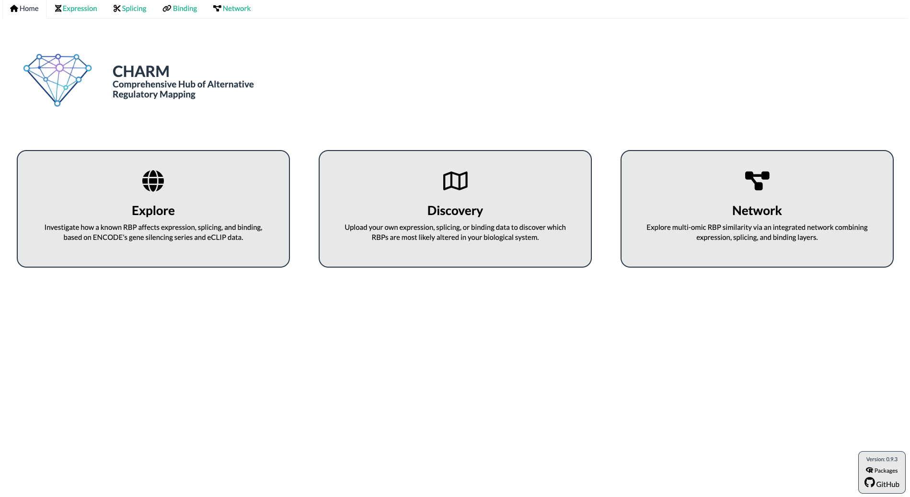
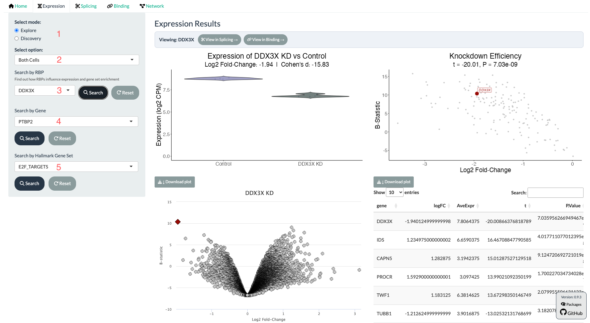
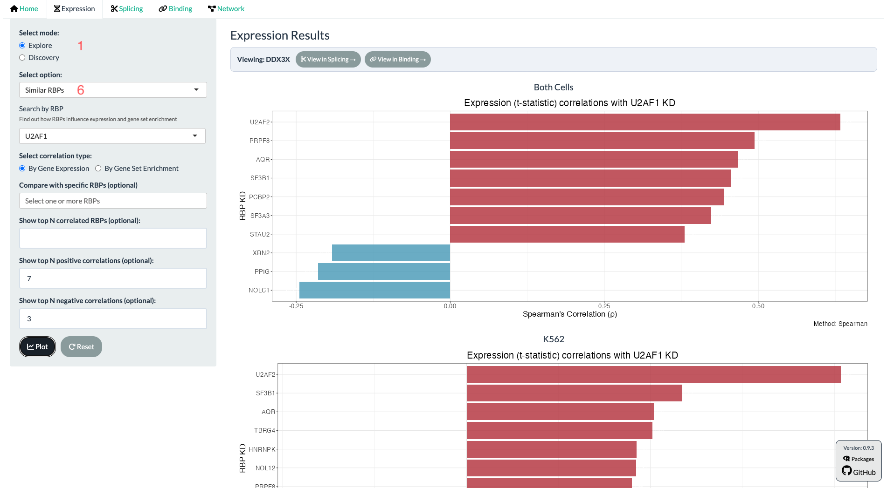
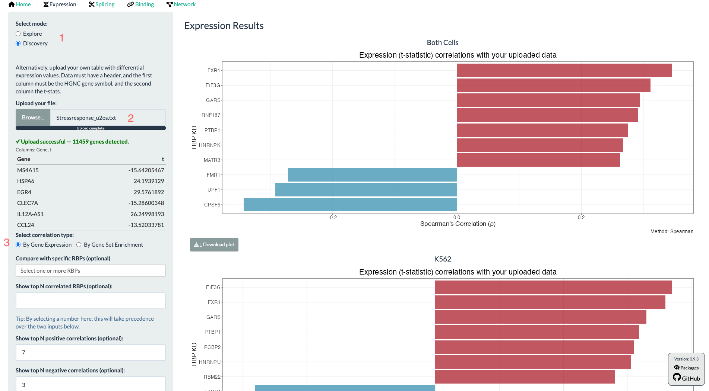
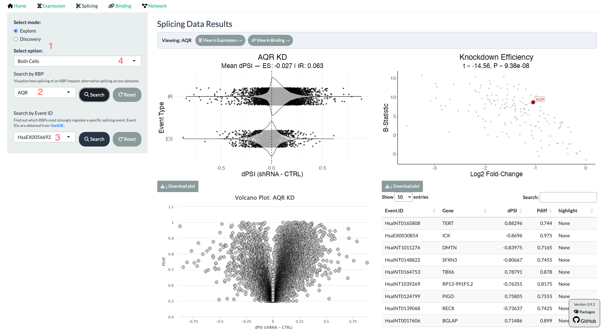
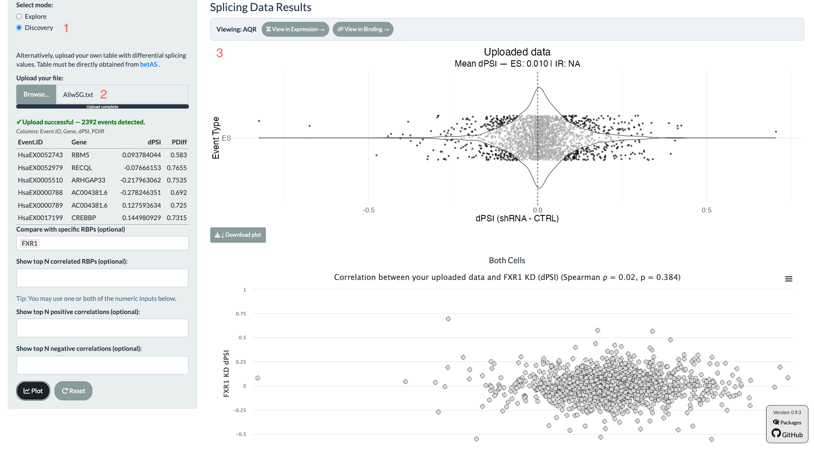
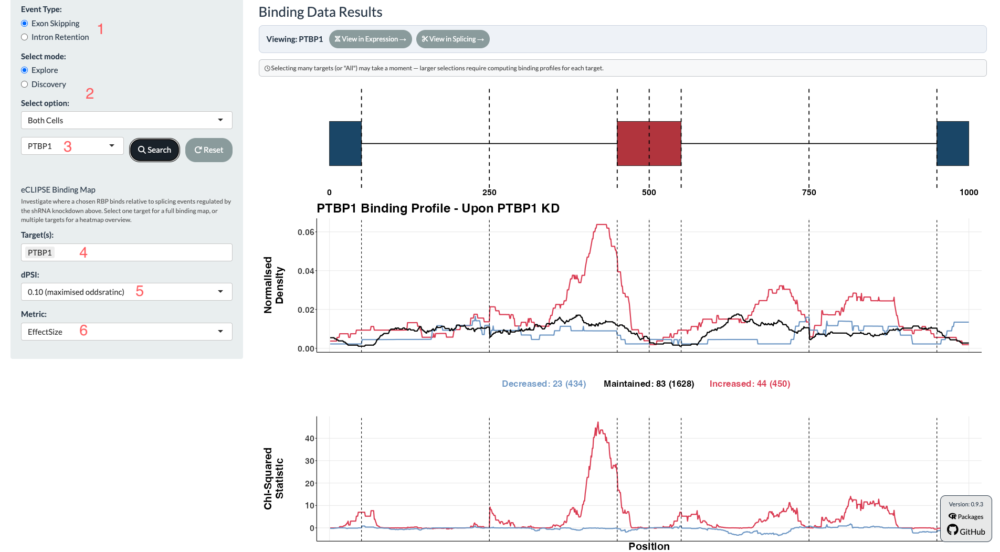
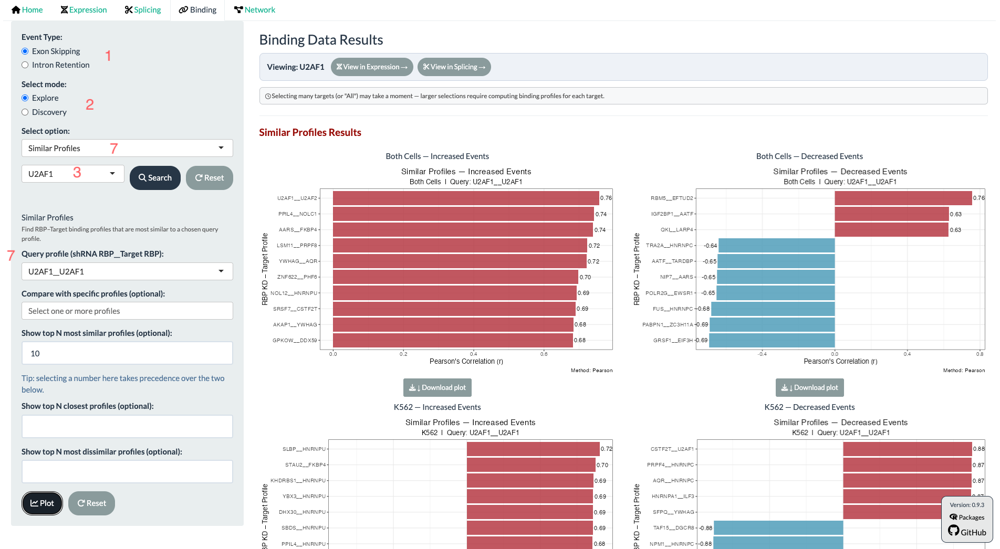
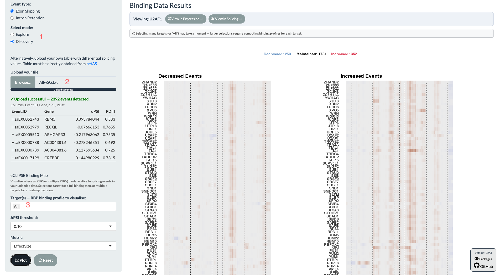
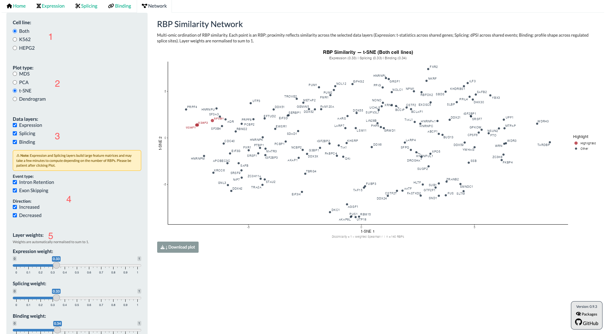

User Tutorial
CHARM
Comprehensive Hub of Alternative Regulatory Mapping
A guide to exploring RNA-binding protein expression, splicing, and eCLIP binding data, all in one webapp.
Based on: Kaizeler, A. & Barbosa-Morais, N.L. “CHARM: Comprehensive Hub of Alternative Regulatory Mapping of RNA-Binding Proteins.” | App: v0.9.3 | Looking for the local pipeline instead? See eCLIPSE Local Pipeline.
1. Introduction
RNA-binding proteins (RBPs) regulate almost every stage of RNA metabolism, and among their most consequential roles is the control of alternative splicing. Studying this regulation properly means combining three different kinds of evidence: how much an RBP is expressed, how splicing changes when the RBP is depleted, and where the RBP physically binds its RNA targets. Assembling this evidence normally requires custom, code-heavy pipelines that align CLIP peaks to genomic coordinates, filter genuine alternative-splicing events from constitutive noise, and apply the right statistical test at each step, a barrier that keeps ENCODE's rich public RBP resources largely inaccessible to wet-lab researchers without computational support.
CHARM (Comprehensive Hub of Alternative Regulatory Mapping) is a no-code, browser-based R/Shiny application built to remove that barrier. It organises RBP-centric data across four modules: Expression, Splicing, Binding, and Network; built on ENCODE shRNA-knockdown RNA-seq, ENCODE eCLIP binding data, and VastDB splicing annotations. The first three modules can be used in either of two modes: Explore mode lets you query this precomputed reference resource directly, while Discovery mode lets you upload your own differential expression or splicing results and compare them against it.
CHARM is deliberately a hypothesis-generating tool rather than a source of validated mechanistic claims. Every relationship it surfaces , be it an expression-independent functional change, or a candidate indirect regulatory interaction between two RBPs, is a candidate for downstream experimental confirmation, not a substitute for it. Two published analyses illustrate what this can reveal. First, because CHARM assesses RBP activity through binding rather than through expression alone, it can detect functional alterations invisible to expression-only analysis. Sequestration of TIA1 into stress granules produced splicing changes resembling those of TIA1 knockdown, even though TIA1 expression itself was unchanged. Second, CHARM can flag indirect regulatory relationships: knockdown of RBM39 altered the binding of U2AF1 and U2AF2, suggesting RBM39 functions within, or in cooperation with, this splicing complex.
2. Getting Started
Accessing CHARM
CHARM runs entirely in your web browser. Open the app here:
https://diseasetranscriptomicslab.github.io/CHARM/
Please be aware that the interface was not designed for mobile screens, so a desktop or laptop display is best for reading the plots and tables comfortably.
The Home Tab
Purpose: Orient yourself and jump straight to the module you need.

The Home tab greets you with the CHARM logo and three clickable cards:
- Explore — takes you to the Expression tab in Explore mode, to investigate how a known RBP affects expression, using ENCODE's gene-silencing series.
- Discover — takes you to the Expression tab in Discovery mode, to upload your own expression data and discover which RBPs are most likely altered in your biological system.
- Network — takes you directly to the Network tab, to explore multi-omic RBP similarity via an integrated network combining expression, splicing, and binding layers.
You can also reach any tab directly at any time using the tab bar at the top of the page (Home, Expression, Splicing, Binding, Network), and from each tab switch from Explore (default) to Discover modes.
Glossary of Key Terms
CHARM's interface uses a small set of recurring terms drawn from RNA biology and statistics. This glossary is meant as a quick reference list.
| Term | Meaning |
|---|---|
| Explore vs. Discovery mode | Explore mode queries CHARM's precomputed reference resource (ENCODE knockdowns). Discovery mode compares a file you upload against that same reference resource. |
| ENCODE knockdowns | Short-hairpin RNA or CRISPR system used by ENCODE to knockdown a specific RBP, so its effect on expression, splicing, and binding of other factors can be measured against a control. |
| eCLIP | Enhanced Crosslinking and Immunoprecipitation. The assay ENCODE used to map genome-wide, where an RBP physically binds RNA. |
| eCLIPSE | CHARM's in-house pipeline (eCLIP for Splicing Evaluation) that aligns eCLIP binding peaks to standardised positions around splicing events, producing the RNA binding maps shown in the Binding tab. |
| PSI / dPSI | Proportion Spliced-In the proportion of transcripts that include a given alternative exon or intron. dPSI is the change in PSI between two conditions (e.g. knockdown vs. control); positive values mean more inclusion. |
| VastDB event ID | A standardised identifier for a specific alternative splicing event, from the VastDB database. |
| betAS | The R package/web app CHARM used to facilitate differential splicing analysis; Discovery-mode splicing and binding uploads are more easily formatted as betAS output. |
| Cohen's d | A standardised effect size describing how far apart two groups are (e.g. knockdown vs. control), independent of sample size. Larger absolute values mean a bigger, more consistent difference. |
| Increased / Decreased / Maintained events | The three categories CHARM's Binding tab splits a knockdown's splicing events into, using a dPSI threshold: Increased and Decreased events changed inclusion by more than the threshold, in each direction; Maintained events are the unaffected background. |
| Chi-squared differential-binding statistic | The statistic CHARM's Binding tab plots at each position of a splicing map: whether an RBP's eCLIP peaks are more or less frequent at Increased events than at Maintained events, and separately at Decreased events than at Maintained events. This gives two independent signed tracks; a positive peak means enrichment relative to Maintained, negative means depletion (see Section 5). |
| GSEA / NES | Gene Set Enrichment Analysis and its Normalised Enrichment Score: whether a MSigDB Hallmark gene set is coordinately shifted, up or down, among genes ranked by differential expression. |
| Similar RBPs / Similar Profiles | A CHARM feature (in the Expression, Splicing, and Binding tabs) that ranks other RBP knockdowns, or RBP-knockdown/target-RBP binding profiles, by how similar their signature is to a chosen RBP or query profile. Expression and Splicing rank by Spearman correlation of t-statistics or NES; Binding ranks by Pearson correlation of the positional binding-density profiles. |
3. Interface Walkthrough
This section describes every tab. All tabs share the same overall aesthetics, with a left-hand sidebar for mode and search controls, and a right-hand results area where the plots appear.
3.1 Expression Tab
Purpose: Investigate how a chosen RBP's knockdown affects gene expression and pathway enrichment, or find which RBP knockdowns most affect a gene or pathway of interest.
Explore Mode
- In the sidebar, leave “Select mode” on Explore (the default).
- Choose a dataset scope from “Select option”: Both Cells, K562, HEPG2, or Similar RBPs. The first three options relate to which cells you will use for the knockdown vs. control comparison. The latter, is a separate sub-mode.
- Search by RBP: type an RBP symbol, click Search. This shows shRNA knockdown-efficacy violin plots, a differential gene expression (DGE) volcano plot with its results table, and a Hallmark GSEA barplot with its results table, all for that RBP's knockdown vs. control.
- Search by Gene (reverse search): type a gene symbol to see, across every profiled RBP knockdown, which knockdown most changes that gene's expression.
- Search by Hallmark Gene Set (reverse search): type a Hallmark gene set name to see which RBP knockdown most shifts that gene set's enrichment (NES).
- Similar RBPs: set “Select option” to Similar RBPs, choose whether to correlate by gene expression or by GSEA enrichment. You can chose to obtain a scatter of your selected RBP with another RBP of interest. Alternatively, you can obtain a bar plot of selected RBPs, or restrict to the top RBPs whose knockdowns lead to most similar or different effect, or top overall (module). All of these correlations compare t-statistics of differential expression, or alternatively, if the GSEA option is selected, NES.


Discovery Mode
- Switch “Select mode” to Discovery.
- Upload a .txt, .csv, or .tsv file with a header row: the first column must contain HGNC gene symbols, and the second column the corresponding differential-expression t-statistics (e.g. from a limma–voom analysis of your own data). Alternatively, any "differential expression metric" should suffice, but bear in mind these will always be compared with t-statistics. Once the file is accepted, CHARM runs a live GSEA on your ranked metric and shows how your data's expression signature and pathway enrichment correlate with each reference RBP knockdown, letting you ask “which RBP knockdown most resembles my experiment?”
- Users can then choose to compare their uploaded data with expression (t-statistics) or GSEA (NES). Like in the Similar RBPs sub-mode, users can chose to obtain a Scatter, or a bar plot, and the top N RBPs that (anti)-correlate with their data.

3.2 Splicing Tab
Purpose: Investigate how a chosen RBP's knockdown affects alternative splicing, or find which RBP knockdown most affects a specific splicing event.
Explore Mode
- Leave “Select mode” on Explore, and choose a dataset scope (Both Cells, K562, HEPG2, or Similar RBPs).
- Search by RBP: type an RBP symbol and click Search to see dPSI violin plots (exon skipping and intron retention, separately) and a differential splicing analysis (DSA) volcano plot with its results table.
- Search by Event ID: enter a VastDB event identifier to see, across every profiled RBP knockdown, which knockdown most changes that specific event's inclusion.
- Similar RBPs: correlate a chosen RBP's splicing signature against all others to find RBPs with similar splicing footprints.

Discovery Mode
- Switch “Select mode” to Discovery.
- For ease of use, we recommend uploading a differential-splicing results table exported directly from the betAS app. Alternatively, please upload a table of VastDB events with their respective dPSI values.
- CHARM then shows an initial plot of your data and lets you compare it against the reference resource's RBP knockdowns to identify which most closely resembles your splicing signature; or how a certain RBP's knockdown correlates with your splicing data.

3.3 Binding Tab
Purpose: Visualise where a chosen RBP binds relative to alternative splicing events, and whether one RBP's knockdown alters another RBP's binding. CHARM's most distinctive capability.
Explore Mode
- Choose an Event Type: Exon Skipping or Intron Retention.
- Leave “Select mode” on Explore, and choose a dataset scope (Both Cells, K562, or HEPG2).
- Search by RBP: enter the knockdown RBP and click Search.
- eCLIPSE Binding Map: choose one or more target RBPs (whose binding you want to inspect under that knockdown). Selecting one target renders a full RNA binding map; selecting several renders a heatmap overview across all of them.
- dPSI: choose the threshold used to define the Increased/Decreased/Maintained categories described above. Besides the fixed 0.05 and 0.1 options, CHARM also offers thresholds chosen automatically for the searched knockdown: the one that maximises the chi-squared statistic, or the one that maximises the number of FDR-significant positions.
- Metric: choose what the bottom track plots. FDR shows the signed, Benjamini–Hochberg-adjusted statistical significance of enrichment or depletion at each position; Effect Size shows the underlying signed chi-squared statistic directly.

Similar Profiles
Set “Select option” to Similar Profiles to rank every RBP-knockdown / target-RBP combination in CHARM by how closely its binding profile's shape matches a chosen query pair (written as shRNA RBP__Target RBP), separately for the Increased-event and Decreased-event tracks. Similarity here is the Pearson correlation between the two profiles' positional density curves: close to +1 means the profiles rise and fall together across the map (the same shape), close to −1 means they are close to mirror images of one another, and near 0 means unrelated. You can restrict the comparison to specific profiles, or ask for the top N most similar and/or most dissimilar instead of the full ranking.

Discovery Mode
- Switch “Select mode” to Discovery.
- For ease of use we suggest uploading a differential-splicing table obtained directly from betAS, exactly as in the Splicing tab. Alternatively, please upload a table of VastDB events with their respective dPSI values.
- Choose a target RBP (or “All” for a heatmap overview), a dPSI threshold, and a metric, exactly as in Explore mode. CHARM builds RNA binding maps from your uploaded data's Increased/Decreased/Maintained categories, letting you identify which RBPs' binding patterns are most altered in your own perturbation.

3.4 Network Tab
Purpose: Visualise RBP–RBP similarity by combining Expression, Splicing, and Binding evidence into a single ordination or dendrogram, to spot candidate complexes or functional groups.
- Choose a cell line: Both, K562, or HEPG2.
- Choose a plot type: MDS, PCA, t-SNE, or Dendrogram (hierarchical clustering).
- Choose which data layers to include (Expression, Splicing, Binding. At least one is required). Including Expression and/or Splicing builds large feature matrices and can take a few minutes; Binding alone is fastest.
- If Binding is included, choose which event types (Exon Skipping / Intron Retention) and directions (Increased / Decreased) to use.
- Set the relative weight of each included layer using the sliders (weights are automatically normalised to sum to 1; roughly equal weighting is a reasonable default).
- Optionally, type RBP names into “Highlight RBPs” to mark them in red on the plot, before or after plotting.
- Click Plot.

4. Interpreting Results
This section is a reference for reading each plot type CHARM produces, independent of which tab generated it.
Violin plots (Expression, Splicing)
Each violin shows the distribution of a value (log2 CPM for Expression, dPSI for Splicing) across samples in one group. In Expression, comparing the knockdown violin to the control violin lets you confirm the shRNA actually reduced the target's expression before trusting any downstream result. The log2 fold-change and Cohen's d shown above the plot summarise the separation between groups: Cohen's d near 0 indicates little separation, around 0.5 a moderate effect, and 0.8 or above a large, consistent effect.
Volcano plots (Expression DGE; Splicing DSA)
Each point is one gene (Expression) or one splicing event (Splicing). The x-axis is the magnitude of change (log2 fold-change, or dPSI); the y-axis is statistical support (the moderated B-statistic for Expression, or Pdiff for Splicing). Points further from the plot's centre and higher up are both larger in effect and more statistically supported. The accompanying results table lets you sort and export these values directly.
GSEA barplots and NES
Genes are ranked by their differential-expression statistic, then tested for whether a gene set is concentrated toward one end of that ranking. A positive Normalised Enrichment Score (NES) means the gene set is enriched among up-regulated genes; a negative NES means it is enriched among down-regulated genes. The accompanying table reports NES together with a Benjamini–Hochberg-adjusted p-value for each gene set.
RNA binding maps (Binding tab)
Each map has two aligned panels along the same x-axis, representing standardised positions across the splicing-regulatory region flanking an exon or retained intron (vertical lines mark the boundaries between the different regions of interest).
- Top panel: normalised binding density of the selected RBP, shown separately for splicing events whose inclusion decreased (blue), increased (red), or was unchanged (black) upon the knockdown you searched.
- Bottom panel: the chi-squared differential-binding statistic at each position, comparing decreased- or increased-inclusion events against unchanged events. Peaks indicate positions where the RBP's binding differs most between event categories.
How to interpret this:
A peak in the bottom track at a position where the RBP is also enriched in the top track (for the matching colour) is the strongest evidence that the RBP directly regulates splicing at that position.
Network ordination plots
Each point is one RBP; proximity approximates similarity across the selected layers (1 minus a weighted correlation of expression, splicing, and/or binding signatures). MDS and PCA preserve global distance relationships and are easiest to interpret quantitatively (percentage of variance explained is shown for both); t-SNE better separates tight local clusters but distorts global distances (far-apart point's distances is more distorted, and thus one shouldn't compare them); the Dendrogram groups RBPs hierarchically and is useful for reading off discrete clusters.
5. FAQ / Troubleshooting
My Discovery-mode file upload was rejected or produced a warning.
Check the required format for the specific tab:
- Expression: a .txt/.csv/.tsv file with a header row; first column HGNC gene symbols, second column differential-expression t-statistics.
- Splicing and Binding: for ease of use, a table exported directly from betAS, uploaded unmodified. Alternatively, a table with VastDB event identifiers and corresponding dPSI values.
The RBP I want is missing entirely.
Two things to check, in order:
- Dataset scope: if you searched under K562 only, try HEPG2; a signature present in one cell line can be entirely absent from the other.
- Reference-resource coverage: CHARM's Explore-mode reference resource includes only the 168 RBPs (of 252 ENCODE eCLIP profiles) that also have matched shRNA-knockdown RNA-seq data. An RBP with eCLIP data but no matched knockdown will not appear as a searchable knockdown in Explore mode.
The Network tab is taking a long time to compute.
This is expected, and is proportional to which layers you selected. Binding alone is fast because it uses precomputed profiles; Expression and/or Splicing build large RBP-by-gene or RBP-by-event feature matrices on the fly and can take a few minutes, especially with Both Cells selected. If you are only exploring, start with Binding alone, then add the other layers once you know which RBPs you want to inspect.
Why does an RBP's own knockdown sometimes not enrich its own binding?
Absence of a clean binding enrichment at the searched RBP's own knockdown does not necessarily mean the map is wrong. Some RBPs regulate splicing indirectly (through a partner or complex member) rather than through direct, local binding at the affected exon. This is precisely the kind of case the Binding tab's cross-RBP search and the Network module are designed to help you investigate further.
How should I interpret a result CHARM shows me?
As a hypothesis, not a conclusion. Every relationship CHARM surfaces, whether an expression-independent functional change or a candidate indirect regulatory interaction, is derived from correlative binding and splicing data. A result that agrees with your own experiment is encouraging but still requires case-by-case biological interpretation, and the absence of a correlation does not, by itself, rule out a real relationship. Use CHARM to prioritise what to test next, not as a final answer.
Why does the Binding tab's Similar Profiles use Pearson correlation, when Expression and Splicing use Spearman?
Because the two comparisons are fundamentally different kinds of data. Expression's and Splicing's Similar RBPs compare t-statistics or NES values across a set of genes or gene sets, an unordered collection that can include extreme outliers, where only the relative ranking between RBP knockdowns is meant to matter; Spearman correlation is the more robust choice there. Binding's Similar Profiles instead compares two continuous, smoothed binding-density curves across hundreds of ordered genomic positions, where the biologically meaningful question is whether the two curves rise and fall together, position by position, which is a genuinely linear notion of shape that Pearson correlation captures directly.
Why are the dPSI thresholds that maximise the χ² statistic called "oddsrat"?
The name "oddsrat" is a legacy from an earlier version of CHARM. Originally, CHARM used Fisher's exact test to quantify differential binding, and the resulting effect size was an Odds Ratio. Later in the development of CHARM, we replaced Fisher's test with the χ² test, which we considered more appropriate for quantifying differential binding. The thresholds are now selected by maximising the χ² statistic, rather than an Odds Ratio. However, many downstream functions and variables had already been built around the name "oddsrat", so we kept the original name for compatibility. In other words, despite the name, "oddsrat" now refers to the χ² statistic used to select the dPSI threshold, not to an Odds Ratio.
Why aren't alternative 5′/3′ splice-site (Alt5/Alt3) events available?
CHARM's splicing analyses currently cover exon-skipping and intron-retention events only; alternative splice-site usage is not yet supported. This is a known limitation described in the CHARM paper's Discussion. Extending the eCLIPSE splicing-genome framework to these event types is a natural direction for future development.
Is iCLIP or iCLIP2 binding data planned?
It's an intended future extension, though not yet implemented. CHARM's binding data currently comes exclusively from ENCODE eCLIP. As the CHARM paper's Discussion notes, iCLIP2 offers higher spatial resolution of RBP-binding sites, and integrating a sufficiently large iCLIP2 dataset, should one become available, is described as a natural extension of the eCLIPSE pipeline — CHARM's architecture is deliberately built so that additional binding assays can be incorporated without changing the interface, but no timeline exists yet.
I'd rather not use VAST-TOOLS. Can I use rMATS or MAJIQ instead?
- rMATS: yes. rMATS reports events in a fixed format that turned out to be structurally compatible with VastDB's event-based approach, so a corresponding rMATS-compatible splicing genome already exists — see the eCLIPSE Local Pipeline tutorial. This route runs through the local pipeline (for computational users), not through the Shiny app's Discovery-mode upload, which still expects a betAS- or VastDB-formatted dPSI table.
- MAJIQ: not currently. MAJIQ's event definitions and coordinate system differ enough from VastDB's that they aren't structurally compatible the way rMATS's are, so no MAJIQ-CHARM-compatible splicing genome exists yet.
PCA is supposed to best preserve distances, so why does the Network tab's PCA view not make sense?
Because in the Network tab, PCA and MDS are not actually run on the same input. MDS (classical multidimensional scaling) is applied directly to the "1 − weighted correlation" dissimilarity matrix, which is exactly the object it is designed to embed: by construction, MDS finds the 2D layout whose distances best approximate that dissimilarity. PCA, instead, is run on the RBP×RBP correlation matrix itself, treating each RBP's row of correlations to every other RBP as its own feature vector, then finding the directions of greatest variance in that (centred and scaled) matrix. That is a legitimate but different question, asked of a different mathematical object — it carries no guarantee of reproducing the original 1−correlation distances the way MDS does, and standardising each RBP's correlation profile to unit variance also discards information about how strongly correlated (or hub-like) an RBP is overall, keeping only the shape of its correlation pattern.
Who do I contact if something looks broken, or if I have a request?
Please contact the lead author at alexandre.afonso@gimm.pt. Alternatively, please open an issue on CHARM's GitHub repository describing it.